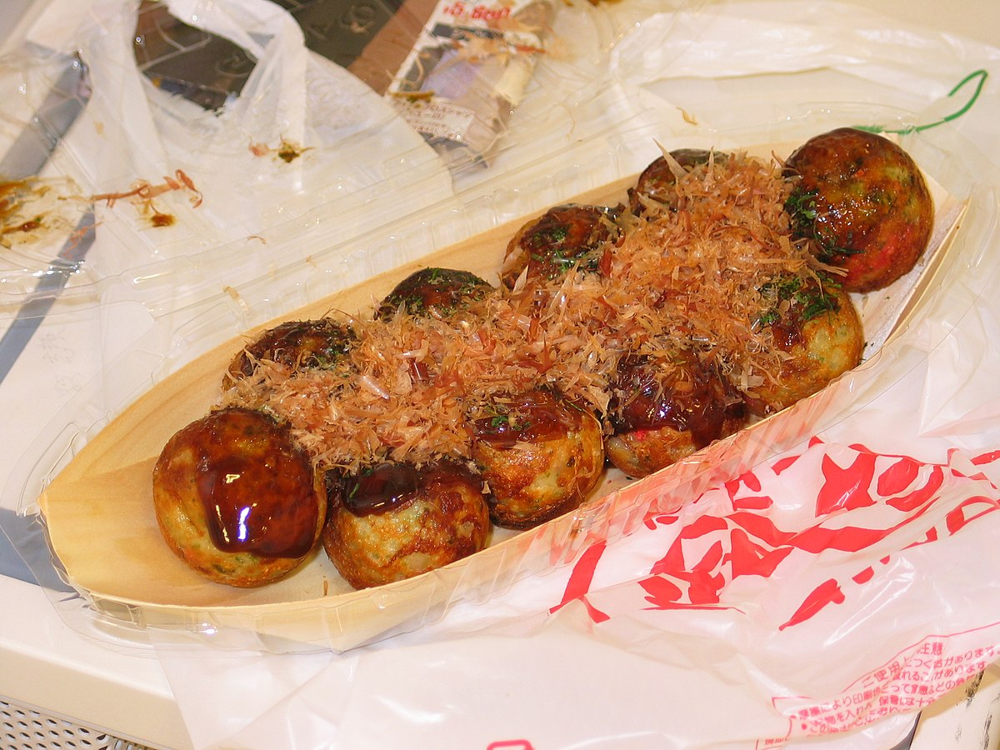

Takoyaki

Ingredientes:
- 2 xícaras de farinha de trigo
- 2 e 1/2 xícaras de caldo de dashi
- 2 ovos
- 1/2 repolho pequeno, picado em pedaços bem pequenos
- 100g de polvo cozido e picado em pedaços pequenos
- 1 cebolinha verde, picada finamente
- Óleo vegetal de sua escolha
- Molho Takoyaki (ou molho tonkatsu, se preferir) para regar
- Maionese japonesa
- Bonito seco em flocos (opcional)
- Alga nori cortada em tiras finas (opcional)
- Beni Shoga (gengibre em conserva, opcional)
Modo de preparo:
- Em uma tigela grande, misture a farinha de trigo com o caldo de dashi até obter uma massa homogênea. Adicione os ovos e misture novamente.
- Acrescente o repolho, o polvo e a cebolinha verde à massa e misture bem, garantindo que todos os ingredientes estejam distribuídos de forma uniforme.
- Aqueça a sua máquina de Takoyaki (um aparelho específico para fazer esses bolinhos) ou, se não tiver, use uma frigideira própria para Takoyaki. Pincele cada cavidade com um pouco de óleo vegetal.
- Despeje a massa até preencher cada cavidade da máquina ou frigideira quase até o topo.
- À medida que a massa começa a cozinhar nas bordas, use um palito ou espátula para virar os bolinhos e garantir que fiquem com uma forma arredondada. Continue girando-os até que fiquem dourados e cozidos por igual.
- Retire os Takoyaki da máquina ou frigideira e coloque-os em um prato.
- Regue-os com o molho Takoyaki (ou molho tonkatsu) e adicione maionese japonesa por cima.
- Se desejar, polvilhe com bonito seco em flocos e adicione algumas tiras de alga nori por cima para decorar.
- Sirva quente e, se preferir, acompanhe com um pouco de Beni Shoga.
Dicas e observações:
- Se você não encontrar caldo de dashi pronto, você pode fazê-lo em casa com facilidade. Basta ferver água com alga kombu e flocos de bonito seco (katsuobushi) por alguns minutos, depois coar o caldo resultante.
- Você pode variar a quantidade de polvo e repolho de acordo com suas preferências. Se gosta de muito recheio, adicione mais polvo e repolho. Lembre-se de cortar em pedaços pequenos para que fiquem bem distribuídos na massa.
- Certifique-se de que sua máquina de Takoyaki ou frigideira esteja bem aquecida antes de começar a fazer os bolinhos. Isso garantirá que eles cozinhem uniformemente e fiquem dourados por fora.